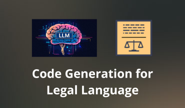

I am a Computer Engineer
focusing on Data Science, AI & ML.
Currently working in Paris as a Model Risk Analyst at Société Générale.
Below you can find more about me and some of the projects I have worked on.
My Education
Master of Engineering
- Data Science, Markets, Organizations & Strategies.
- Specialized in Machine Learning and Artificial Intelligence.
- Selected for a double degree program.
Master's and Bachelor's Degrees in Computer Engineering
- Specialized in Artificial Intelligence & Data Analytics.
- Developed a strong foundation in data structures, algorithm and software engineering.
My Experience

Model Risk Analyst
- Joined for an end-of-studies internship. Designed and implemented an Automated
Machine Learning (AutoML) tool to
challenge internal models. Enabled the team to standardize analysis processes and increase
efficiency (~5x faster).
- Currently working full-time as Model Risk Management Analyst
My Projects
Discover the GitHub repository in one click!
Code Generation for Legal language [Catala]

- Built a dataset for legal code generation by collecting online Catala code
- Defined evaluation metrics for the Catala programming language (e.g., CodeBleu, Tree-Edit
distance)
- Evaluated performance across different LLM families (e.g., Llama, Phi) using custom metrics
- Paper accepted for the NLLP workshop at the EMNLP 2025 conference
ONNX Runtime using Rust

- Created a parser to extract information to build a network from an ONNX file
- Implemented a subset of ONNX operations
- Used Rust libraries for efficient parallel execution of ONNX models
Web Scraping using BeautifulSoup

- Scraped ~230,000 products from 18 stores across 10 regions in France
- Analyzed correlation between regional wages and product prices, providing insights for
pricing strategies
- Conducted a brief analysis of the Nutri‑Score
Fault Aware Training using PyTorch

- Trained CNNs with intentional faults to improve error tolerance
- Used fault injection to enhance CNN accuracy during training
Biometric Identity Verification using Python
Booking airplane seats using React and JS